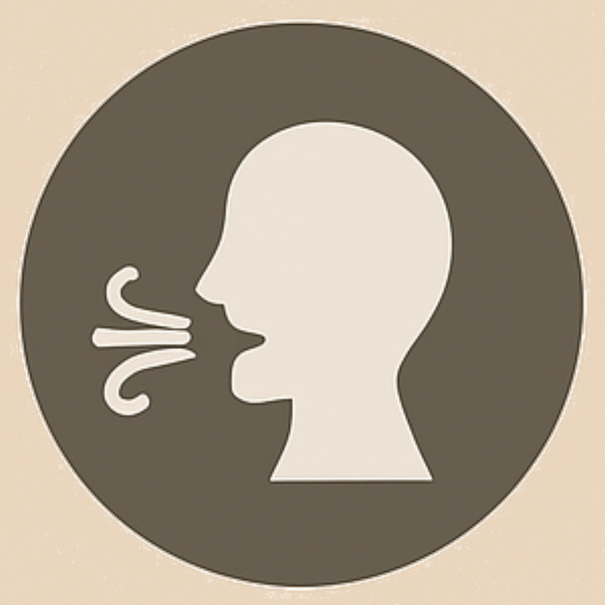

Pets can’t tell us when they feel unwell, so it’s up to us to notice changes in their behavior or appearance. Recognizing signs of illness early can make a big difference, helping your cat or dog get the care they need before a problem becomes serious. Paying attention to small changes every day keeps your pet healthy and safe.
common signs to watch for :
Changes in Appetite or Thirst: Eating or drinking much more or less than usual can indicate a health problem.
Vomiting or Diarrhea: Occasional upset stomach is normal, but frequent vomiting or diarrhea could be serious.
Lethargy or Unusual Behavior: If your pet is unusually tired, hiding, or acting differently, something might be wrong.
Coughing, Sneezing, or Breathing Issues: Persistent coughing, sneezing, or difficulty breathing can signal illness.

Skin Problems or Hair Loss: Redness, bumps, itching, or patches of missing fur may point to infections, allergies, or parasites.
Swelling or Lumps: Any unusual bumps, swelling, or growths should be checked by a vet.
What to do if you recognize one of these signs?
Encourage contacting a vet immediately if symptoms appear
Keep track of changes to give accurate info to the vet.
Watching your pet every day helps you notice small changes before they become serious problems. Regular observation keeps your cat or dog healthy, happy, and safe.

 Vomiting or Diarrhea: Occasional upset stomach is normal, but frequent vomiting or diarrhea could be serious.
Vomiting or Diarrhea: Occasional upset stomach is normal, but frequent vomiting or diarrhea could be serious.